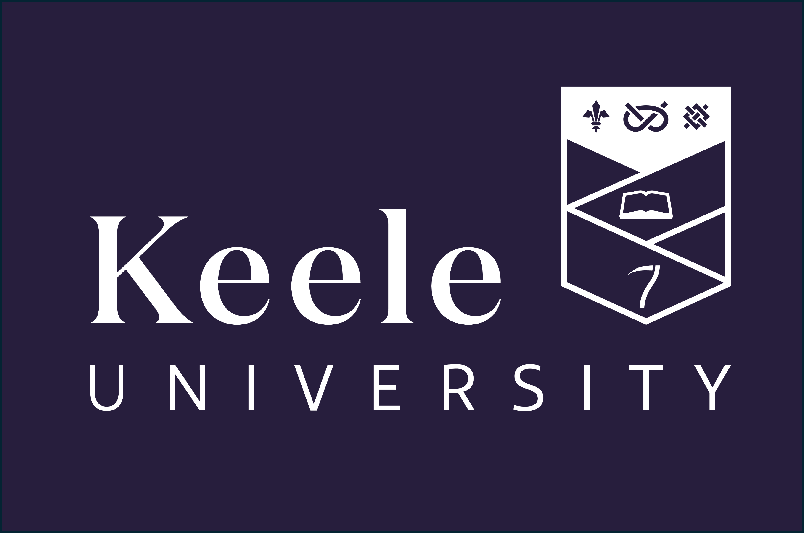
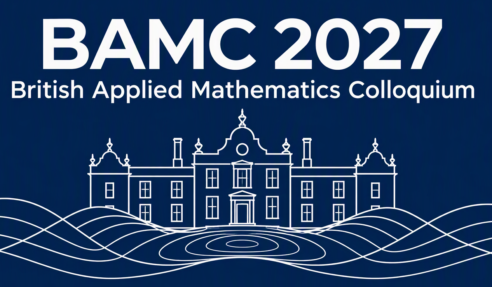

Keele University • 21–24 June 2027
Menu
Home
Programme
Call for Mini‑Symposia
Plenary Speakers
Public Lecture
Registration
Venue, Travel and Accommodation
Financial Support
Code of Conduct
Committee and Contact Info
Partners, Sponsors and Exhibitors
Information on financial support for attending BAMC 2027 will be announced in early February 2027. Please check this page regularly for updates.